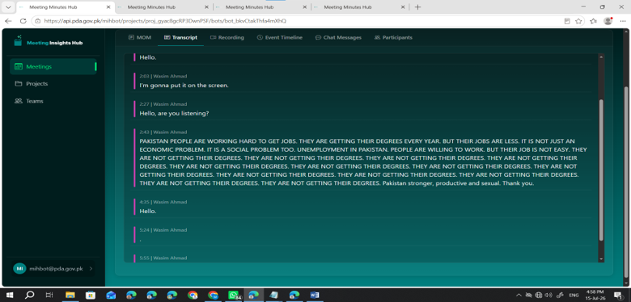
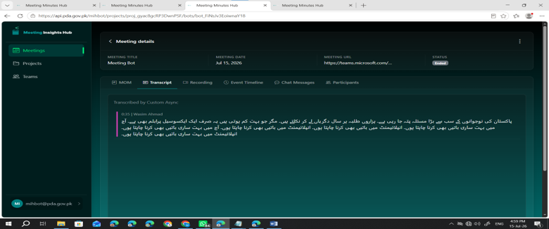
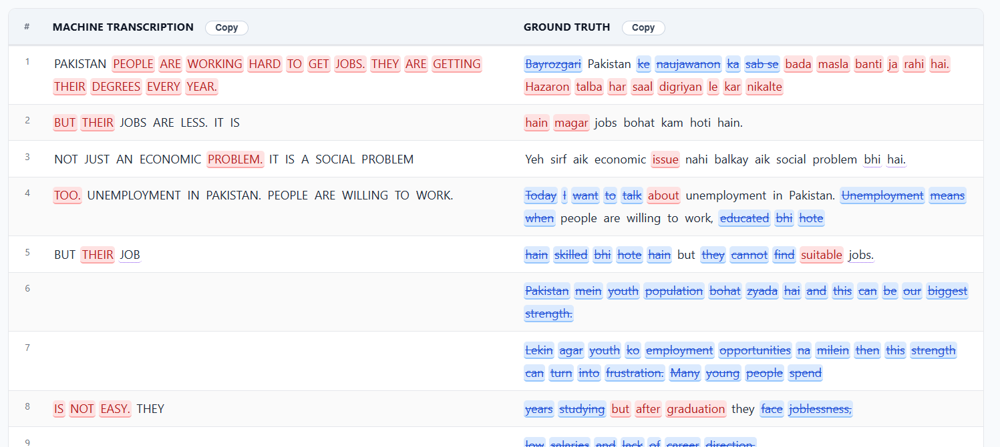

MIH Attendee Bot Observations Report
Transcription Issues Observed During Attendee Bot Testing — 15/7/26
Test Environment & Login Details
Means I logged-in with this:
Please test simultaneous calls scenario on this portal.
https://api.pda.gov.pk/mihbot/projects/proj_gyac8gcRP3DwnPSF/bots/bot_3Vkg98du2VvVTOoq
email: mihbot@pda.gov.pk
password: 8*Cv8rPyyU5'=zs
Attendee Meeting Minutes Hub
Meeting Minutes Hub
Meeting Minutes Hub
Test Cases & Meeting Links
-
Test Case 1 Add Bot Instantly and Start Speaking as soon as Bot enter.
-
Test Case 2 Add Bot Instantly but speak after 1 minute gap.
-
Test Case 3 Add Bot after 1 minute gap and start speaking as soon as bot enter.
-
Test Case 4 Add Bot after 1 minute gap and also speak after 1 minute gap.https://api.pda.gov.pk/mihbot/projects/proj_gyac8gcRP3DwnPSF/bots/bot_xY2EwateiLygEGpN Reference Text:
Bayrozgari Pakistan ke naujawanon ka sab se bada masla banti ja rahi hai. Hazaron talba har saal digriyan le kar nikalte hain magar jobs bohat kam hoti hain.
Yeh sirf aik economic issue nahi balkay aik social problem bhi hai.
Today I want to talk about unemployment in Pakistan. Unemployment means when people are willing to work, educated bhi hote hain skilled bhi hote hain but they cannot find suitable jobs.
Pakistan mein youth population bohat zyada hai and this can be our biggest strength.
Lekin agar youth ko employment opportunities na milein then this strength can turn into frustration. Many young people spend years studying but after graduation they face joblessness, low salaries and lack of career direction.
The main causes of unemployment are lack of industries, weak economy, poor skill development and mismatch between education and market needs.
Hamara education system students ko degrees to deta hai lekin practical skills, communication, technology and entrepreneurship par kam focus karta hai. To solve this issue government, private sectors and educational institutions must work together.
Technical education ko promote karna hoga freelancing, IT, small businesses and startups ko support deni hogi.
Youth ko sirf job seekers nahi job creators banana hoga. In the end I would say that unemployment is not just about missing jobs it is about missing hope.
Agar hum apni youth ko skills, opportunities and support dein then Pakistan can become stronger, productive and successful. Thank you.
Executive Summary
During attendee bot testing on 15/7/26, three transcription issues were observed under different bot entry and speaking scenarios. Each issue is documented below with supporting screenshots.
Identified Issues
Issue 1 — Start Repeating a Sentence Again and Again
The transcription starts repeating the same sentence again and again, even when that content was not spoken repeatedly by the tester.

.png)
Issue 2 — Start Missing Text
The system starts missing text from the spoken content, so parts of the speech are not captured in the transcription.

Issue 3 — Urdu Written on One Side but Transcribed in English
On one side, the sentence is written in Urdu, but the system transcribes it in English instead of keeping the Urdu script as spoken/expected.
